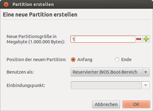

Grundlagen
Dieser Artikel wurde für die folgenden Ubuntu-Versionen getestet:
Dieser Artikel ist größtenteils für alle Ubuntu-Versionen gültig.
Der GRand Unified Bootloader 2 – kurz GRUB 2 – ist die zweite Version von GNU GRUB  und damit der Nachfolger von GRUB (GRUB Legacy). Dieser liegt jetzt in der Version 2.0 vor - die Version 1.9 wird nicht mehr weiter bearbeitet. Der Einsatz von GRUB Legacy wird nicht mehr unterstützt.
und damit der Nachfolger von GRUB (GRUB Legacy). Dieser liegt jetzt in der Version 2.0 vor - die Version 1.9 wird nicht mehr weiter bearbeitet. Der Einsatz von GRUB Legacy wird nicht mehr unterstützt.
Ein Bootloader ist notwendig, um Betriebssysteme auf einem Computer überhaupt starten zu können. GRUB 2 ist eine vollständige Neuentwicklung, so dass er sich von GRUB Legacy – insbesondere was die Konfiguration anbelangt – in vielen Punkten unterscheidet.
Einige neue Merkmale von GRUB 2 sind:
Unterstützung des Bootens von ext4, Btrfs, LVM und Software-RAID (sowohl Hard- als auch Software)
Unterstützung von EFI
Unterstützung von GUID Partition-Table (GPT), auch ohne EFI
Unterstützung von EFI-BIOS mit secure-boot
direkte Unterstützung von UUID und Festplatten-Bezeichnung (Labels)
Modulares Laden der Komponenten zur Laufzeit
Grafische Benutzeroberfläche, mit der Möglichkeit das Aussehen von GRUB anzupassen
Unterstützt unterschiedliche Systemplattformen
Unterstützung von Skripten
Benutzerdefinierte Boot-Einträge
Verbesserte Partitionsbezeichnung
Rettungsmodus zum Beheben von Bootproblemen
Systemstart¶
Folgende Schritte werden beim Starten eines Rechners durchlaufen:
Das BIOS sucht je nach Einstellung
im MBR auf dem ersten Datenträger nach einem Bootmanager bzw. Bootloader.
auf der EFI-Partition nach der Startdatei grubx64.efi
Der Bootloader GRUB 2 lädt sich nach und nach die Dateien bzw. Images
boot.img
core.img
/boot/grub/grub.cfg
erforderliche mod-Dateien (Treiber) für jeweils spezielle Aufgaben.
Damit kann dann die Anzeige auf dem Monitor angeboten und innerhalb eines Zeitlimits (timeout) die Auswahl von der Tastatur ausgewertet, umgesetzt und ein Betriebssystem gestartet werden.
MBR mit Master-Partitionstabelle (MPT)¶
Bei der Installation von GRUB 2 wird u.a. ein freier Bereich direkt hinter dem Master-Boot-Record (MBR) benötigt, um die obigen Informationen abzulegen und ein ordnungsgemäßes Booten zu ermöglichen.
Es muss zusätzlich darauf geachtet werden, dass dieser freie Bereich ausreichend groß ist - die dazugehörigen, aktuellen Werkzeuge für die Partitionierung (u.a.: GParted) berücksichtigen diese Anforderung. Insbesondere bei einer Installation auf eine SSD ist es wegen dem Alignment wichtig, dass hierbei die Blockgrenzen beachtet werden. Die erste Partition sollte dann erst ab Sektor 2048 beginnen - typisches Beispiel im Terminal mit:
sudo fdisk -l
ergibt dann:
Gerät boot. Anfang Ende Blöcke Id System /dev/sdc1 2048 75499519 37748736 7 HPFS/NTFS/exFAT ...
MBR mit GUID-Partitionstabelle (GPT)¶
Wird eine Festplatte neu mit einer GPT versehen und werden dazu die aktuellen Werkzeuge für eine Formatierung, wie z.B. GParted verwendet, so unterscheidet sich die Vorbereitung nicht von der unter Master-Partitionstabelle beschriebenen Maßnahmen.
Bei Verwendung einer vorhandenen GPT muss man aber zusätzlich, je nach Installationsart (BIOS oder EFI), einen gesonderten Bereich (hier Partition) anlegen, um die GRUB 2-Informationen zu hinterlegen.

Ohne EFI¶
Um GRUB 2 mit einer GUID-Partitionstabelle ohne EFI nutzen zu können, muss eine gesonderte Bootloader-Partition eingerichtet sein. Dieses kann in der GUI des Installers einer Desktop-CD/DVD bei der Auswahl und Einstellung der Partitionen vorgenommen werden.
Partitionsnummer: erste freie Stelle auf dem Datenträger
siehe folgenden Hinweis
Kennung: ef02
Name: bios_grub (bei GParted) - BIOS Boot-Partition (bei gdisk)
Dateisystem: keins - RAW-Zustand
GUID: 21686148-6449-6E6F-744E-656564454649
Größe: 1024 KiB (1 MiB)
kein Mountpunkt
Wenn man diese Einrichtung während der Installation bei der manuellen Partitionierung mit dem Installer erledigt, ist es ausreichend, eine eigene Partition in der Größe von 1 MB als "Reservierter BIOS Boot-Bereich" einzustellen. Verwendet man stattdessen direkt GParted, trägt man außer der Größe im Feld "Bezeichnung" (bzw. englisch "Label") einfach bios_grub ein. Zusätzlich muss man in GParted noch "nicht formatiert" bei "Dateisystem" einstellen.
Die weiteren Merkmale wie Kennung und GUID erfolgen bei beiden Programmen automatisch im Hintergrund und werden nicht angezeigt. In GParted können weitere Einstellmöglichkeiten wie "Ausrichten an" standardmäßig ignoriert werden. Alle Einstellungen lassen sich bei Bedarf auch im Terminal mit gdisk kontrollieren sowie einstellen.
Hinweis:
Wenn Windows 7 - ohne EFI - eine eigene Bootpartition hat (mit "System-reserviert" bezeichnet, in der Regel 100 MiB), so kann man dort einen entsprechenden Bereich am Ende über eine Verkleinerung abzwacken. Dieses kann man im Live-System mit einem Werkzeug zur Partitionierung (GParted) durchführen. Oder man richtet sich diesen Bereich gleich hinter der ersten Windowspartition ein.
Mit EFI¶
Um GRUB 2 mit EFI nutzen zu können, wird eine EFI-System-Partition (ESP) benötigt:
Partitionsnummer: 1 (Empfehlung)
Kennung: ef00
Name: EFI System
Dateisystem: FAT (Standard 32 bit)
GUID: C12A7328-F81F-11D2-BA4B-00A0C93EC93B
Größe: 100-200 MiB
Mountpunkt: /boot/efi
Zur Installationen mit (U)EFI siehe auch EFI Bootmanagement / EFI Installieren
Links¶
 Übersicht
Übersicht - Linux Magazin 11/2009
- Linux Magazin 11/2009- Erstellt mit Inyoka
-
 2004 – 2017 ubuntuusers.de • Einige Rechte vorbehalten
2004 – 2017 ubuntuusers.de • Einige Rechte vorbehalten
Lizenz • Kontakt • Datenschutz • Impressum • Serverstatus -
Serverhousing gespendet von